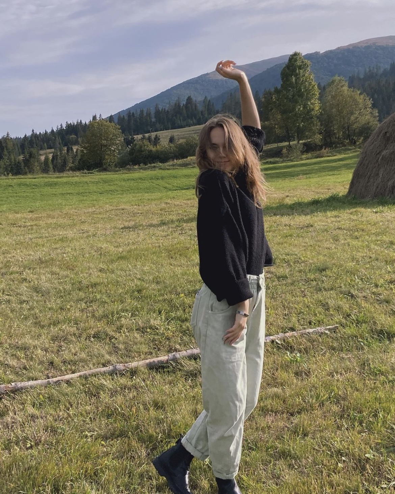
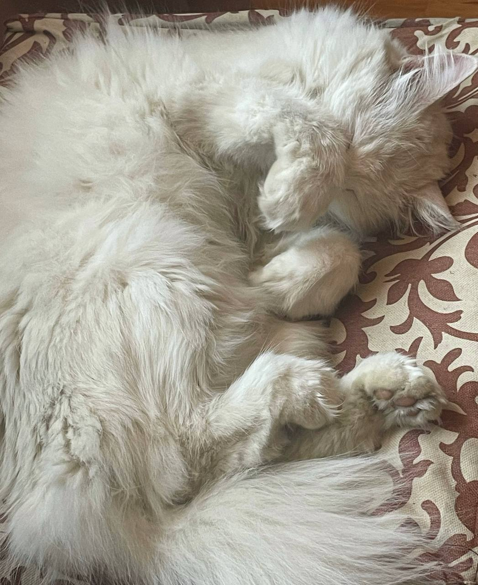
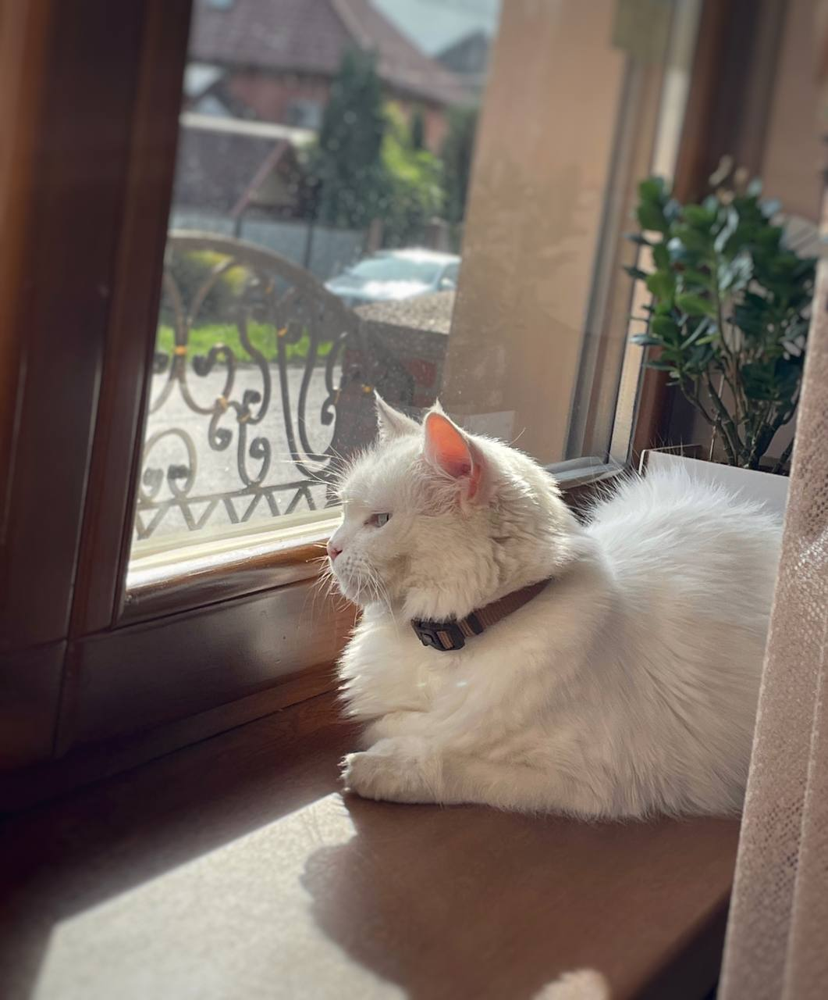

Моє рідне місто Мукачево, Закарпатська область. Мені вже 20 років (дн 15 жовтня).
Я навчаюсь на графічного дизайнера в ЛНАМ, бо цього бажала моя душа.
У дитинстві я не любила малювати, та не розуміла, що тут може бути цікавого.
Але доля, як завжди, обернулась іншим шляхом. Через велике бажання вступити
на кафедру графічного дизайну, навчилась малювати, але одразу знала,
що ілюстратором мені не бути)

Соціальні мережі:
https://www.instagram.com/k_monych/
https://t.me/KaterinaMonych
Також у мене є киця Муся, яка любить спати лапкапи верх (фото нижче), та їсти 24/7 :)
 